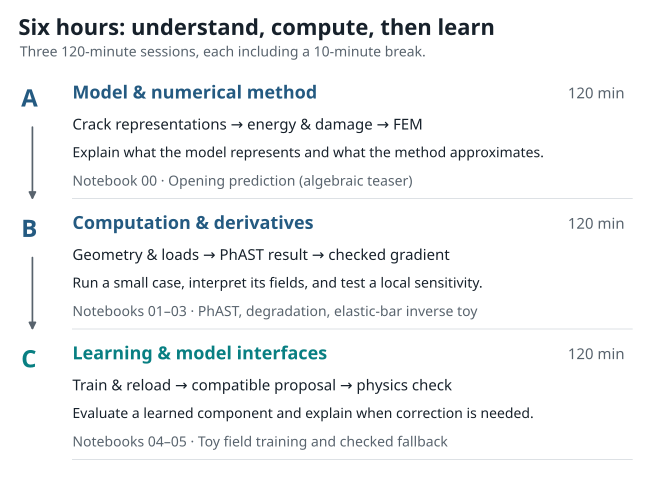

PhAST: A Learn-by-Doing Introduction to Phase-Field Fracture#
{kind=link}

Figure 1 The workshop combines interactive lecture demonstrations with hands-on notebook activities across four core pillars of computational mechanics and scientific machine learning.#
Welcome to this interactive tutorial guide on phase-field fracture modeling and differentiable finite elements.
This guide connects continuum solid mechanics, numerical algorithms, and machine learning into a clear, hands-on learning route. Designed for students, researchers, and engineers with an undergraduate background in mechanics or computing, this course demystifies how cracks nucleate and evolve, how finite element equations are assembled in modern tensor frameworks like PyTorch, and how automatic differentiation enables inverse parameter discovery.
Four Core Workshop Pillars#
This course is organized into four key computational and physical milestones:
What Phase-Field Fracture Is (Fundamentals):
We begin with the physics of fracture, contrasting sharp cracks with smooth diffuse approximations. We study the Griffith energy balance, regularisation length scales (\(\ell\)), crack density functionals \(\Gamma_\ell(d)\), and degradation laws \(g(d)\) in AT1 and AT2 models.Hands-on with the PhAST Solver (Simulation Pipeline):
We walk through an end-to-end simulation: creating a two-dimensional specimen geometry, generating a triangular (T3) mesh, prescribing displacement and precrack boundary conditions, running the staggered Newton/direct solver, and post-processing the resulting stress and diffuse damage fields.Differentiability and Inverse Problems (Sensitivities & Discovery):
We explore how automatic differentiation operates on numerical mechanics solvers. We verify gradients by comparing PyTorch autograd with directional finite differences, backpropagate sensitivities through coupled equilibrium steps, and solve an inverse problem to recover unknown material properties (such as Young’s modulus \(E\)).Deep Learning Integration (Plug-and-Play Surrogates):
We examine how neural networks and operator learning interface with physics solvers. We train a neural adapter on simulation data, save and reload model checkpoints, evaluate neural field proposals against physical equilibrium residuals, and apply hybrid solver-in-the-loop corrections.
Course Schedule & Hands-On Labs#
The workshop is designed for a six-hour curriculum, divided into two complementary streams:
3 Hours of Interactive Demonstrations: Concepts, mathematical derivations, numerical algorithms, and visual field walkthroughs.
3 Hours of Hands-on Lab Notebooks: Interactive Jupyter tutorials where you run code, inspect fields, modify physical parameters, and solve guided exercises.
Interactive Computational Labs & Google Colab#
Every computational chapter pairs with a self-contained, executable Jupyter notebook. You can run each lab with a single click in Google Colab (using free cloud CPU/GPU runtimes), download the blank practice notebooks for hands-on assignments, or inspect the worked solutions:
Lab & Pillar |
Focus & Key Concepts |
One-Click Run |
Practice Notebook |
Worked Solutions |
In-Book Lesson |
|---|---|---|---|---|---|
Lab 00 |
Branch Selection & Energy Objectives |
|
|||
Lab 01 |
End-to-End PhAST Simulation |
|
|||
Lab 02 |
Autograd vs. Finite Differences |
|
|||
Lab 03 |
Inverse Parameter Discovery |
|
|||
Lab 04 |
Neural Field Adapter |
|
|||
Lab 05 |
Residual Evaluation & Hybrid Correction |
|
How to Use This Tutorial Guide
Read and Follow: Each chapter introduces the physical intuition before deriving the governing equations and presenting the code.
Run the Notebooks: Computational lessons can be read inline or executed interactively in Jupyter or Google Colab with one click.
Explore and Modify: Use the practice notebooks to test your understanding. Try varying the material parameters (such as fracture toughness \(G_c\) or length scale \(\ell\)) to see how the physical crack pattern responds.
Notation Convention: Throughout this guide, \(d=0\) denotes completely intact material, while \(d=1\) denotes fully damaged material. A small numerical residual stiffness \(\eta_{\mathrm{res}} \ll 1\) is retained in computation to keep the linear elasticity operator well-conditioned.
For visual experiments alongside the text, explore the interactive visual explorations or follow the environment setup guide. Practice and solution notebooks are provided for each computational chapter.
- 1. From Cracks to Computation: Learn by Doing
- 1.1. Motivation and Learning Goals
- 1.2. Introductory Experiment: Multi-Valued Systems and Energy Objectives
- 1.3. Course Workflow: Theory, Code, and Practice
- 1.4. Documenting Computational Experiments
- 1.5. What to Observe Before We Begin
- 1.6. Exercise: label the layers
- 1.7. What to carry into the crack-representation chapter
- 2. Crack representations: sharp, cohesive, and diffuse
- 2.1. The starting point: a sharp crack
- 2.2. Cohesive-zone models: separation on an interface
- 2.3. XFEM: enrich an approximation space
- 2.4. Phase field: replace a surface by a narrow band
- 2.5. Comparing Crack Representations
- 2.6. Separating Formulation, Discretization, and Solver
- 2.7. Exercise: Identifying the Computational Layers
- 2.8. Summary of Key Concepts
- 3. Fracture energy: AT1, AT2, degradation, and width
- 3.1. A common energy template
- 3.2. The damage convention and degradation derivative
- 3.3. Hands-On Lab: Verifying the Degradation Derivative
- 3.4. AT2 and AT1 are normalised choices
- 3.5. Deriving the strong-form damage residual
- 3.6. Enforcing irreversibility
- 3.7. Width, mesh, and what must be checked
- 3.8. Exercise: one derivative and one scale argument
- 3.9. Sources for this chapter
- 4. From solid mechanics to staggered damage updates
- 4.1. The mechanical subproblem
- 4.2. Why the damage equation resembles diffusion
- 4.3. One load increment, two coupled updates
- 4.4. Staggered, monolithic, Newton, and quasi-Newton
- 4.5. Static and dynamic fracture
- 4.6. Acceptance checks
- 4.7. Looking Ahead: Running the PhAST Staggered Solver
- 4.8. Exercise: write the update before reading the code
- 4.9. Sources for this chapter
- 5. Geometry, FEM, tensors, and matrix-free operators
- 5.1. Start with a boundary-value problem
- 5.2. From cells to fields
- 5.3. Tensor shapes are part of the model contract
- 5.4. Assembled and matrix-free routes
- 5.5. Static and dynamic arrays
- 5.6. Where automatic differentiation fits
- 5.7. Inspecting results: four views, one interpretation
- 5.8. Hands-On Lab: Running an End-to-End PhAST Fracture Simulation
- 5.9. Exercise: identify a silent shape error
- 5.10. Take-away
- 6. Differentiation and an illustrative inverse problem
- 6.1. Define the forward map before differentiating it
- 6.2. Three ways to obtain a sensitivity
- 6.3. Follow the gradient one update at a time
- 6.4. A bounded parameterisation
- 6.5. A minimal inverse experiment
- 6.6. Hands-On Lab: Differentiating Mechanics and Parameter Recovery
- 6.7. Directional Derivative Verification
- 6.8. Why inverse recovery can be difficult
- 6.9. Exercise: interpret a gradient result
- 6.10. Sources for this chapter
- 7. Train, save, reload, adapters, and checked proposals
- 7.1. Decide what is being learned
- 7.2. A small supervised-learning contract
- 7.3. Where does the training gradient travel?
- 7.4. Train, save, and reload reproducibly
- 7.5. Computational lesson: train, save, reload, and compare a toy field model
- 7.6. Mapping between representations
- 7.7. From a proposal to a checked hybrid calculation
- 7.8. Computational lesson: accept a compatible proposal or fall back
- 7.9. DAgger-style data aggregation
- 7.10. Evaluation: Physical Metrics and Model Validation
- 7.11. Exercise: identify the missing provenance
- 7.12. Sources for this chapter
- 8. Practice, Solutions, Glossary, and References
Optional inverse experiments#
The inverse visual laboratory connects particle geometry, sampled loss landscapes and retained fracture fields. Begin with the animated history lesson to see how loading and unloading change a derivative route. Select these readings to extend a classroom topic or explore the subject after the course. The interactive panels and animations accompany the downloadable notebooks and figures.
Optional inverse experiments